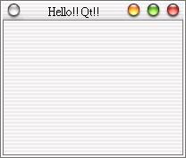

不
可免俗的，我們從最簡單的基本視窗產生開始介紹，就叫作Hello!!
Qt!!好了，請新增一個目錄hello，並在當中使用任一編輯器來編輯一個hello.cpp的檔案，內容如下：
#include <qapplication.h> 程式的第一行，我們include了qapplication.h這個標頭檔（header file），每一個Qt視窗程式，都必須有且只能有一個QApplication物件，qapplication.h包括了QApplication類別 的定義。 QApplication負責程式的初始、結束及處理事件（event）的迴圈等，並提供基本的視窗外觀，這個外觀與系統的桌面環境有關，例如標題列的樣 式、視窗外觀、系統功能鍵等等，我們所使用的桌面環境是KDE搭配acqua風格，您若是在Windows 2000、Windows XP或其它作業系統桌面環境下，也會有各自不同的外觀。
QApplication
物件接受命令列引數作為它的引數，如果您沒有設定視窗標題，且會使用執行檔的名稱作為視窗標題名稱。
Qt的視窗元件是
QWidget類別或其衍生類別所產生的
物件，在這邊我們簡單的新增一個QWidget物件mainwin，利用它來作一些標題設定為視窗大小的指定；我們會使用QApplication的
setMainWidget()方法，將QWidget物件mainwin設定為它的主要Widget，setMainWidget()還有一個功能，就
是在按下關閉鈕時，通知exec()結束它的事件迴圈。
mainwin->resize(200,
150);
我們設定主視窗
Widget的標題與大小，如果不設定標題，將會以程式的執行檔名稱作為標題。
將app的主
Widget設定為mainwin，如果不撰寫此行，則按下關閉鈕時，雖然會視窗消失，但程式並沒有停止執行，您必須從主控台（console）來關閉程
式。
我們讓視窗顯示必
須使用show()方法。
QApplication
的exec()方法會提供一個事件處理迴圈，視窗顯示之後會不斷傾聽（listen）事件。
撰寫好程式存檔之後，我們就可以開始進行make的動作，我們必須先產生Makefile，Qt提供了qmake這個好用的程式來協助我們，它可以自動根據目 前目錄下檔案產生*.pro的專案檔（project file），然後根據專案檔產生Makefile，簡單的說，您只要下達以下的指令，就可以產生Makefile： qmake
-project hello.pro
qmake 在第一個指令如果不指定輸出名稱，則會自動根據目錄名稱來作為主檔名稱，接下來就可以進行編譯了： make
如果程式撰寫無誤，編輯完成之後，在目錄下就會產生hello這個可執行檔（Linux下），接下來就是執行看看成果： ./hello
下圖是我們的第一個Qt視窗：  |